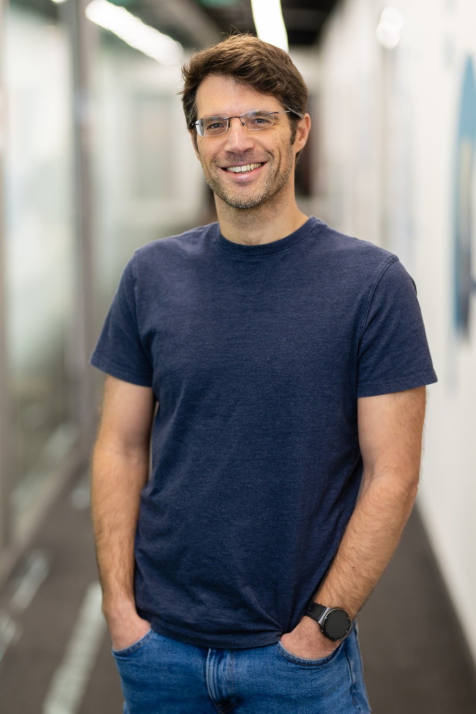

Dr. Leeor Peled
CPU Architect and head of CPU Architecture research at Huawei.
Leeor Peled has over 20 years of experience developing CPU core architectures, starting at Intel working on various cores from Sandybridge, Ivybridge & Skylake, until Goldencove and Lioncove.
He then moved to Huawei as a senior architect and research manager working on CPU cores for Mobile phones, server CPUs and many other domains.
Leeor received his PhD at the Technion under Prof. Uri Weiser & Prof. Yoav Etsion.
Currently he is leading Huawei CPU Architecture Research with a team that spans across Israel, Zurich, Cambridge, Edinburgh, and China.
His main focus is on Predictors, Parallelism, Caches, Software/Hardware codesign, System/OS, and dynamic optimization, but he may be willing to talk about other things if you're not careful.
He also serves as an associate editor of IEEE Computer Architecture Letters (CAL) and PC memeber on recent ISCA, Micro and HPCA conferences.
Email: leeorp (at) gmail.com
LinkedIn: Leeor-Peled
Google Scholar: Profile

Areas of Interest
- CPU Architecture and Microarchitecture (uArch)
- Predictors, prefetchers and adaptive configurability
- Automated parallelism
- Code semantics inference and extrpolation
- Hardware-Software Codesign
- Memory Hierarchy: Prefetching and Cache Design, replacement policies
- Machine Learning for CPU optimization
- Performance evaluation, modeling and reliable benchmarking
- Binary translation and optimization (BT/DBO)
- Transactional Memory
Patents
Publications & Papers
Conference Activities
- CATC - Compilers, Architecture and Tools Conference (Co-organizer and Program Committee)
- Micro 56 - 56th IEEE/ACM International Symposium on Microarchitecture 2023 (Toronto) - Program committee
- Micro 57 - 56th IEEE/ACM International Symposium on Microarchitecture 2024 (Austin) - Program committee
- Micro 58 - 56th IEEE/ACM International Symposium on Microarchitecture 2025 (Seoul) - Program committee
- ISCA 2016 - International Symposium on Computer Architecture (Seoul) - ERC
- ISCA 49 - 49th IEEE/ACM International Symposium on Computer Architecture (NY) - ERC
- ISCA 2026 - 53rd IEEE/ACM International Symposium on Computer Architecture (Raleigh) - ERC
- HPCA 2026 - 32st IEEE International Symposium on High-Performance Computer Architecture (Sydney) - Program committee
- HPCA 2027 - 33st IEEE International Symposium on High-Performance Computer Architecture (Salt Lake City) - Program committee
- DPC 4 - 4th Data Prefetching Championship (in conjunction with HPCA 2026) - Program committee, Keynote, Full recording
Employment
- 2005 - 2020: Performance Architect at Intel, focusing on CPU microarchitecture design and optimization
- 2020 - 2023:Senior Architect at Huawei (Toga Networks - Israel research center), head of Advanced Technologies Group (ATG)
- 2023 - 2026:Head of CPU Architecture Research at Huawei (Skyline CPU)
Graduate Coursework & Seminars
- 048878 - VLSI Architecture (Asynchronous MIPS Design Project)
- 048879 - Seminar in VLSI Architecture (The Problem with Threads)
- 048750 - Advanced Topics in Computer Architecture (Cache Memory architecture for CMP systems)
- 048961 - Topics in Reliable Distributed Systems (Maximum Benefit from a Minimal HTM)
- 046853 - VLSI Architecture Design
- 236374 - Probabilistic Methods and Algorithms
- 049011 - Advanced Topics: From Virtualization to Cloud (Deduplication in Cloud Systems)
- 048750 - Advanced Topics in Computer Architecture (Naiad Distributed Stream Processing)
- 049011 - Advanced Topics: Real-time Systems (Transactional Memory for Real-Time Systems)